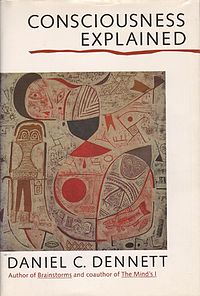

Consciousness Explained, by Dennett
Sunday September 18, 2022
Dennett takes materialism as an axiom and uses it to prove there is no dualist, soul-like consciousness, no audience in a “Cartesian theater.” He thinks that if you imagine a philosophical zombie, then you're imagining too hard, and if you don't think the Chinese room is conscious, then you aren't imagining hard enough. His argument is that the brain must be where consciousness comes from, and we know what kind of things are in the brain, so consciousness must be from all that: lots of simple things together generate consciousness and there's nothing more to the story. I don't feel like it's explained.
Do I ask too much of an explanation of consciousness? Science is fundamentally descriptive, after all. Maxwell's equations (etc.) don't explain why electromagnetism (etc.) is the way it is. They don't really explain how it works. Every theory is vulnerable to a child repeatedly asking “why.” This is the kind of infinite regress Dennett is trying to avoid. And yet, I am conscious. This experience is the phenomenon of interest. Being able to have experiences. I don't think there's anything being a magnet is like, but there is something being me is like, and I'm not convinced Dennett explains the difference.
It seems very much like a riff on Society of Mind, which I should probably read as well, though I don't know whether it will be more persuasive. Do people consider this a settled issue? At least in the popular press, folks are still pitching weird ideas and describing consciousness as a “deep and abiding philosophical problem.” Is Dennett's explanation bad, or do I just not want to understand?
For the most part, I think Dennett is not even wrong, because he isn't explaining what he promises to. It is a challenge, though, to imagine what explanation (between Dennett and dualism) I would prefer.

"One conclusion we can draw from this is that we are not brains in vats—in case you were worried." (page 7)
He's arguing this is the case because it would be too computationally expensive to simulate a world, based on the graphics of Donkey Kong being crummy. Perhaps this seemed convincing in 1991?
"And, as with all the earlier mysteries, there are many who insist—and hope—that there will never be a demystification of consciousness." (page 22)
I do have some sympathy for this critique... What would a satisfactory explanation look like?
"The challenge is to construct a theory of mental events, using the data that scientific method permits. Such a theory will have to be constructed from the third-person point of view, since all science is constructed from that perspective." (page 71)
"Suppose you are confronted by a “speaking” computer, and suppose you succeed in interpreting its output as speech acts expressing its beliefs and opinions, presumably “about” its conscious states. The fact that there is a single, coherent interpretation of a sequence of behavior doesn’t establish that the interpretation is true; it might be only as if the “subject” were conscious; we risk being taken in by a zombie with no inner life at all. You could not confirm that the computer was conscious of anything by this method of interpretation. Fair enough. We can’t be sure that the speech acts we observe express real beliefs about actual experiences; perhaps they express only apparent beliefs about nonexistent experiences. Still, the fact that we had found even one stable interpretation of some entity’s behavior as speech acts would always be a fact worthy of attention." (page 78)
If you agree with Dennett, then do you agree that Google's LaMDA is conscious? According to Dennett, it might as well be, and he doesn't identify any method for distinguishing.
"Other people, however, find the implication that there could be, in principle, a conscious robot so incredible that it amounts in their eyes to the reductio ad absurdum of my theory." (page 432)
"the famous four F’s (fight, flee, feed, or mate)" (page 188)
I hadn't heard this one before.
"Here is the hypothesis I will defend: Human consciousness is itself a huge complex of memes (or more exactly, meme-effects in brains) that can best be understood as the operation of a “von Neumannesque” virtual machine implemented in the parallel architecture of a brain that was not designed for any such activities. The powers of this virtual machine vastly enhance the underlying powers of the organic hardware on which it runs, but at the same time many of its most curious features, and especially its limitations, can be explained as the byproducts of the kludges that make possible this curious but effective reuse of an existing organ for novel purposes." (page 210)
"But still (I am sure you want to object): All this has little or nothing to do with consciousness! After all, a von Neumann machine is entirely unconscious; why should implementing it—or something like it: a Joycean machine—be any more conscious? I do have an answer: The von Neumann machine, by being wired up from the outset that way, with maximally efficient informational links, didn’t have to become the object of its own elaborate perceptual systems. The workings of the Joycean machine, on the other hand, are just as “visible” and “audible” to it as any of the things in the external world that it is designed to perceive—for the simple reason that they have much of the same perceptual machinery focused on them. Now this appears to be a trick with mirrors, I know." (page 225)
"With so many idiots working on the problem, no wonder consciousness is still a mystery." (page 255)
Out of context, yes.
"There seems to be phenomenology. That’s a fact that the heterophenomenologist enthusiastically concedes. But it does not follow from this undeniable, universally attested fact that there really is phenomenology." (page 366)
"It is time to recognize the idea of the possibility of zombies for what it is: not a serious philosophical idea but a preposterous and ignoble relic of ancient prejudices. Maybe women aren’t really conscious! Maybe Jews! What pernicious nonsense." (page 405)
This protest is a little weird, given that earlier Dennett defines "people" as "adult human beings" (not children?) and argues that consciousness is largely a cultural phenomenon (so one culture could be more conscious than another?).
"It is hard to imagine how “just more of the same” could add up to understanding, but we have very good reason to believe that it does, so in this case, we should try harder, not give up." (page 439)
Dennett implicitly rejects the possibility that there could be something different, something not just more of the same, something that is an explanation of consciousness rather than a rejection of a dualist explanation.
"(What could a clam do with a secret? Just sit there in the mud, chuckling to itself?)" (page 447)
This is really funny to me somehow. What a happy clam!
"the assumption that consciousness is a special all-or-nothing property that sunders the universe into two vastly different categories: the things that have it (the things that it is like something to be, as Nagel would put it) and the things that lack it." (page 447)
I agree that this is weird too.
"When a deaf-mute acquires language (in particular, Sign language, the most natural language a deaf-mute can learn), a full-fledged human mind is born, clearly different in discoverable ways from the mind of a hearing person, but capable of all the reflective intricacy and generative power—perhaps more."
"But without a natural language, a deaf-mute’s mind is terribly stunted."
"Many people are afraid to see consciousness explained because they fear that if we succeed in explaining it, we will lose our moral bearings. Maybe we can imagine a conscious computer (or the consciousness of a bat) but we shouldn’t try, they think. If we get into that bad habit, we will start treating animals as if they were wind-up toys, babies and deaf-mutes as if they were teddy bears, and—just to add insult to injury—robots as if they were real people."
(page 448)
"Do we think, for instance, that vast resources should be set aside to preserve the imaginary prospects of a renewed mental life for deeply comatose people, while there are no resources to spare to enhance the desperate, but far from imaginary, expectations of the poor? Myths about the sanctity of life, or of consciousness, cut both ways. They may be useful in erecting barriers (against euthanasia, against capital punishment, against abortion, against eating meat) to impress the unimaginative, but at the price of offensive hypocrisy or ridiculous self-deception among the more enlightened." (page 454)
"Leaving something out is not a feature of failed explanations, but of successful explanations."
"Only a theory that explained conscious events in terms of unconscious events could explain consciousness at all."
(page 454)